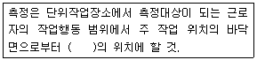
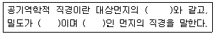
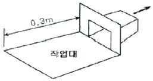

산업위생관리산업기사 (2016-03-06 기출문제)
1과목: 산업위생학 개론
1. 규페증은 공기 중 분지 내에 어느 물질이 함유되어 있을 때 발생하는가?
- 석면
- 탄소가루
- 크롬
- 유리규산
(정답률: 75%)

2. 피로의 예방대책에 대한 설명으로 관계가 적은 것은?
- 작업환경을 정리ㆍ정돈한다.
- 불필요한 동작을 피하고 에너지 소모를 줄인다.
- 너무 정적인 작업은 동적인 작업으로 전환한다.
- 휴식은 한 번에 장시간을 휴식하는 것이 효과적이다.
(정답률: 90%)
3. 작업에 기인한 피로현상을 나타낸 것으로 적합하지 않은 것은?
- 취업 후 6개월 이내의 이직은 노동부담이 큼으로서 오는 경우가 많다.
- 피로의 현상은 작업의 종류에 따라 차이가 있으며 개인적 차이는 작다.
- 작업이 과중하면 피로의 원인이 되어 각종질병을 유발할 수 있다.
- 사업장에서 발생되는 피로는 작업부하, 작업환경, 작업시간 등의 영향으로 발생할 수 있다.
(정답률: 89%)
4. 우리나라 산업안전보건법에 의하면 시료채취는 무엇을 기본으로 하는가?
- 지역시료채취
- 개인시료채취
- 동일시료채취
- 고체 흡착 시료채쥐
(정답률: 82%)
5. 산업안전보건법 중 작업환경측정 대상 인자는 약 몇 종인가?
- 약 120종
- 약 190종
- 약 460종
- 약 690종
(정답률: 76%)
6. 유해물질과 생물학적 노출지표로 이용되는 대사산물의 연결이 잘못된 것은?
- 벤젠 - 소변 중의 총폐놀
- 톨루엔 - 소변 중의 만델린산
- 크실렌 - 소변 중에 메틸마뇨산
- 트리클로로에틸렌 - 소변 중의 트리클로로초산
(정답률: 42%)
7. 미국국립산업안전보건청(NIOSH)의 들기작업기준(Lifting Guideline)의 평가요소와 거리가 먼 것은?
- 수평거리
- 수직거리
- 휴식시간
- 비대칭 각도
(정답률: 79%)
8. 신체적 결함과 부적합한 작업이 잘못 연결된 것은?
- 간기능 장애 - 화학 공업
- 편평족 - 앉아서 하는 작업
- 심계항진 - 격심작업, 고소작업
- 고혈압 - 이상기온, 이상기압에서의 작업
(정답률: 85%)
9. 에너지 대사율(RMR:relative metabolic rate)에 대한 설명으로 틀린 것은?
- RMR=(작업시 에너지 대사량 - 안정 시 에너지 대사량)/기초대사량이다.
- RMR이 대량 4~7정도이면 중(重) 작업(동작, 속도가 큰 작업)에 속한다.
- 총에너지 소모량은 기초 에너지대사량과 휴식 시 에너지대사량을 합한 것이다.
- 작업 시 에너지 대사량은 휴식 후부터 작업 종료 시까지의 에너지 대사량을 나타낸다.
(정답률: 65%)
10. 근골격계 질환을 예방하기 위한 작업환경개선의 방법으로 인체측정치를 이용한 작업환경의 설계가 이루어질 때 가장 먼저 고려되어야 할 사항은?
- 조절가능 여부
- 최대치의 적용 여부
- 최소치의 적용 여부
- 평균치의 적용 여부
(정답률: 85%)
11. 산업위생의 영역 중 기본과제로서 거리가 먼 것은?
- 작업장에서 생산성 향상에 관한 연구
- 노동력의 재생산과 사회경제적 조건에 관한 연구
- 작업능력의 향상과 저하에 따른 작업조건 및 정신적 조건의 연구
- 최적 잡업환경 조성에 관한 연구 및 유해 작업환경에 의한 신체적 영향 연구
(정답률: 58%)
12. “모든 물질은 독성을 가지고 있으며, 중독을 유발하는 것은 용량(dose)에 의존한다.”고 말한 사람은?
- Galen
- Agricola
- Hippocrates
- Paracelsus
(정답률: 64%)
13. 미국 산업위생학술원(Amerivan Academy of Industrial Hygiene)은 산업위생 분야에 종사하는 전문가들이 반드시 지켜야 할 윤리강령을 채택한다. 윤리강령에 대한 내용 중 틀린 것은?
- 궁극적 책임은 기업주와 고객보다 근로자의 건강 보호에 있다.
- 근로자, 사회 및 전문 직종의 이익을 위해 과학적 지식을 공개하고 발표한다.
- 근로자의 건강 보호가 산업위생 전문가의 1차적인 책임이라는 것을 인식한다.
- 기업주와 근로자간 이해관계가 있는 상황에서 적극적으로 개입하여 문제를 해결한다.
(정답률: 78%)
14. 작업강도는 작업대사율에 따라 5단계로 구분할 수 있다. 격심작업의 작업대사율은?
- 3 이상
- 5 이상
- 7 이상
- 9 이상
(정답률: 83%)
15. 납이 인체에 미치는 영향과 거리가 먼 것은?
- 신경게통의 장해
- 조혈기능에 장해
- 간에 미치는 장해
- 신장에 미치는 장해
(정답률: 61%)
16. 톨루엔의 노출기준(TWA)이 50ppm일 때 1일 10시간 작업시의 보정된 노출기준은? (단, Brief 와 Scal의 보정방법을 이용한다.)
- 35ppm
- 50ppm
- 75ppm
- 100ppm
(정답률: 64%)
17. 감압(decompression)에 따른 기포형성량과 관련된 요인이 아닌 것은?
- 감압속도
- 혈류의 변화
- 대기의 상대습도
- 조직에 용해된 가스량
(정답률: 67%)
18. 어떤 근로자가 물체 운반작업을 하고 있다. 1일 8시간 작업에 적합한 작업대사량이 5.3kcal/분, 해당 작업의 작업대사량은 6kcal/분, 휴식 시의 대사량은 1.3kcal/분 이라면 Hertig의 식을 이용한 적절한 휴식시간 비율(%)은?
- 약 15%
- 약 20%
- 약 25%
- 약 30%
(정답률: 50%)
19. 200명의 근로자가 1주일에 40시간 연간 50주로 근무하는 사업장이 있다. 1년 동안 30건의 재해로 인하여 25명의 재해자가 발생하였다면 이 사업장의 도수율은?
- 15
- 36
- 62
- 75
(정답률: 64%)
20. 산업안전보건법상 사무실 실내공기 오염물질의 측정방법(사무실 공기관리 지침)으로 틀린 것은?
- 석면분진 : PVC 필터에 의한 채취
- 이산화질소 : 고체흡착관에 의한 채취
- 일산화탄소 : 전기화학검출기에 의한 채취
- 이산화탄소 : 비분산적외선검출기에 의한 채취
(정답률: 58%)
2과목: 작업환경측정 및 평가
21. pH 2, pH 5인 두 수용액을 수산화나트륨으로 각각 중화시킬 떄 중화제 NaOH의 투입량은 어떻게 되는가?
- pH5인 경우 보다 pH 2가 3배 더 소모된다.
- pH5인 경우 보다 pH 2가 9배 더 소모된다.
- pH5인 경우 보다 pH 2가 30배 더 소모된다.
- pH5인 경우 보다 pH2가 1000배 더 소모된다.
(정답률: 57%)
22. 고유량 공기 채취펌프를 수동 무마찰 거품관으로 보정하였다. 비눗방울이 450cm3의 부피(V)까지 통화하는데 12.6초(T) 걸렸다면 유량(Q)은?
- 2.1L/min
- 3.2L/min
- 7.8L/min
- 32.3L/min
(정답률: 42%)
23. 허용기준 대상 유해인자의 노출농도 측정 및 분석방법 중 온도표시에 관한 내용으로 틀린 것은? (단, 고용노동부 고시 기준)
- 미온은 30~40℃이다.
- 온수는 50~60℃를 말한다.
- 냉수는 15℃이하를 말한다.
- 찬 곳은 따로 규정이 없는 한 0~15℃의 곳을 말한다.
(정답률: 72%)
24. 황(S)과 인(P)을 포함한 화합물을 분석하는데 일반적으로 사양되는 가스크로바토그래피 검출기는?
- 불꽃이온화검출기(FID)
- 열전도검출기(TCD)
- 불꽃광전자검출기(FPD)
- 전자포획검출기(ECD)
(정답률: 65%)
25. TCE(분자량=131.39)에 노출되는 근로자의 노출농도를 측정하고자 한다. 추정되는 농도는 25ppm이고, 분석 방법의 정량한계가 시료당 0.5mg일 때, 정량한게 이상의 시료량을 얻기 위해 채취하여야 하는 공기최소량은? (단, 25℃, 1기압 기준)
- 약 2.4L
- 약 3.8L
- 약 4.2L
- 약 5.3L
(정답률: 43%)
26. 생물학적 노출지수에서 통계적으로 상관계수가 높게 나타날 수 있는 항목은?
- 공기 중 일산화탄소 농도와 혈중 무기수온의 양
- 공기 중 이산화탄소 농도와 혈중 이황화탄소의 양
- 공기 중 벤젠농도와 요중 s-phenylmercapturicacid
- 공기 중 분진 농도와 난청도
(정답률: 57%)
27. 유량, 측정시간, 회수율, 분석에 의한 오차가 각각 15,3,5,9일 때 누적오차는?
- 18.4%
- 19.4%
- 20.4%
- 21.4%
(정답률: 74%)
28. 개인시료채취기를 사용할 때 적용되는 근로자의 호흡위치의 정의로 가장 적정한 것은?
- 호흡기를 중심으로 직경 30cm인 반구
- 호흡기를 중심으로 반경 30cm인 반구
- 호흡기를 중심으로 직경 45cm인 반구
- 호흡기를 중심으로 반경 45cm인 반구
(정답률: 82%)
29. 수동식시료채취기 사용 시 결핍(starvation)현상을 방지하면서 치료를 채취하기 위한 작업장 내의 최소한의 기류속도는? (단, 면적 대 길이의 비가 큰 뱃지형 수동식시료채취기기준)
- 최소한 0.001~0.0⑤m/sec
- 최소한 0.⑤~0.1m/sec
- 최소한 1.0~5.0m/sec
- 최소한 5.0~10.0m/sec
(정답률: 65%)
30. 일정한 물질에 대해 분석치가 참값에 얼마나 접근하였는가 하는 수치상의 표현은?
- 정확도
- 분석도
- 정밀도
- 대표도
(정답률: 70%)
31. 음압이 100배 증가하면 음압 수준은 몇 dB증가 하는가?
- 10dB
- 20dB
- 30dB
- 40dB
(정답률: 65%)
32. 옥외(태양광선이 내리쬐지 않는 장소)에서 습구흑구온도지수(WBGT)의 산출방법은? (단, NWB : 자엽습구온도, DT : 건구온도, GT : 흑구온도)
- WBGT = 0.7NWB + 0.3GT
- WBGT = 0.7NWB + 0.3DT
- WBGT = 0.7NWB + 0.2DT + 0.1GT
- WBGT = 0.7NWB + 0.2GT + 0.1DT
(정답률: 72%)
33. 작업장 내 공기 중 아황산가스(SO2)의 농도가 40ppm일 경우 이 물질의 농도는? (단, SO2 분자량 = 64, 용적 백분율(%)로 표시)
- 4%
- 0.4%
- 0.04%
- 0.004%
(정답률: 50%)
34. 직경분립충돌기의 장ㆍ단점으로 가장 거리가 먼 것은?
- 호흡기의 부분별로 침착된 입자크기의 자료를 추정할 수 있다.
- 채취준비 시간이 짧고 시료의 채취가 쉽다.
- 입자의 질량크기분포를 얻을 수 있다.
- 되튐으로 인한 시료 손실이 일어날 수 있다.
(정답률: 64%)
35. 미국에서 사용하는 먼지수를 나타내는 방법으로서 mppcf의 단위를 사용한다. 1mppcf는 mL당 대략 몇 개의 입자를 나타내는가?
- 20
- 35
- 50
- 75
(정답률: 58%)
36. 세기 lo의 단색광이 정색액을 통과하여 그 광의 70%가 흡수되었을 때의 흡광도는?
- 0.72
- 0.62
- 0.52
- 0.42
(정답률: 70%)
37. 어떤 유해물질을 분석하는데 사용할 분석법의 검출한계는 5ug이다. 이 물질의 노출기준(0.5mg/m3)의 1/10에 해당 되는 농도를 검출하기 위해서는 0.2L/분의 유량으로 몇 분을 채취해야 하는가?
- 5분
- 50분
- 500분
- 5000분
(정답률: 44%)
38. 여과포집에 적합한 여과재의 조건이 아닌 것은?
- 포집대상 입자의 입도분포에 대하여 포집효율일 높을 것
- 포집시의 흡입저항은 될 수 있는 대로 낮을 것
- 접거나 구부리더라도 파손되지 않고 찢어지지 않을 것
- 될 수 있는 대로 흡습률이 높을 것
(정답률: 70%)
39. 고열측정에 관한 기준으로 ( )에 알맞은 내용은? (단, 고용노동부 고시 기준)

- 50센티미터 이상, 120센티미터 이하
- 50센티미터 이상, 150센티미터 이하
- 80센티미터 이상, 120센티미터 이하
- 800센티미터 이상, 150센티미터 이하
(정답률: 61%)
40. 알고 있는 공기 중 농도를 만들기 위한 방법인 Dynamic Mathod에 관한 설명으로 가장 거리가 먼 것은?
- 일정한 용기에 원하는 농도의 가스상 물질을 집어넣어 알고 있는 농도를 제조한다.
- 다양한 농도 범위에서 제조 가능하다.
- 지속적인 모니터링이 필요하다.
- 다양한 실험을 할 수 있으며 가스, 증기, 에어로졸 실험도 가능하다.
(정답률: 48%)
3과목: 작업환경관리
41. 저온에 의해 일차적으로 나타나는 생리적 영향으로 가장 적절한 것은?
- 말초혈관 확장에 따른 표면조직 냉각
- 근육긴장의 증가
- 식욕 변화
- 혈압 변화
(정답률: 59%)
42. MUC(maximum use concentration)계산식으로 옳은 것은?
- MUC = TLVxPF
- MUC = TLV/PF
- MUC = PF/TLV
- MUC = TLV+PF
(정답률: 68%)
43. 감압병(decompression sickness)예방을 위한 환경관리 및 보건관리 대책으로 바르지 못한 것은?
- 질소가스 대신 헬륨가스를 흡입시켜 작업하게 한다.
- 감압을 가능한 짧은 시간에 시행한다.
- 비만자의 작업을 금지시킨다.
- 감압이 완료되면 산소를 흡입시킨다.
(정답률: 68%)
44. 기후요소 중 감각온도(등감온도)와 직접 관계가 없는 것은?
- 기온
- 기습
- 기류
- 기압
(정답률: 64%)
45. 저온환경에서 발생할 수 잇는 건강장해에 관한 설명으로 가장 거리가 먼 것은?
- 전신체온강하는 장시간의 한랭 노출 시 체열의 손실로 말미암아 발생하는 급성중증장해이다.
- 제3도 동상은 수포와 함께 광범위한 삼출성염증이 일어나는 경우를 말한다.
- 피로가 극에 다하면 체열의 손실이 급속히 이루어져 전신의 냉각상태가 수반되게 된다.
- 참호족은 지속적인 국소의 산소결핍 때문이며 저온으로 모세혈관 벽이 손상되는 것이다.
(정답률: 74%)
46. 빛의 양의 단위인 루맨(Lumen)에 대한 설명으로 가장 정확한 것은?
- 1 Lux의 광원으로부터 단위 입체각으로 나가는 광도의 단위이다.
- 1 Lux의 광원으로부터 단위 입체각으로 나가는 휘도의 단위이다.
- 1 촉광의 광원으로부터 단위 입체각으로 나가는 조도의 단위이다.
- 1 촉광의 광원으로부터 단위 입체각으로 나가는 광속의 단위이다.
(정답률: 73%)
47. 방진대책 중 전파경로대책에 해당하는 것은?
- 수진점의 기초등량의 부가 및 경감
- 수진측의 탄성지지
- 수진측의 강성변경
- 수진점 근방의 방진구
(정답률: 57%)
48. 진동에 관한 설명으로 틀린 것은?
- 진동의 주파수는 그 주기현상을 가르키는 것으로 단위는 Hz이다.
- 전신진동인 경우에는 8~1500Hz, 국소진동의 경우에는 2~100Hz의 것이 주로 문제가 된다.
- 진동의 크기를 나타내는 데는 변위, 속도, 가속도가 사용된다.
- 공명은 외부에서 발생한 진동에 맞추어 생체가 진동하는 성질을 가리키며 실제로는 진동이 증폭된다.
(정답률: 77%)
49. 방진마스크에 관한 설명으로 틀린 것은?
- 흡기저항 상승률은 낮은 것이 좋다.
- 필터 재질로는 활성탄과 실리카겔이 주로 사용된다.
- 방진마스크의 종류는 격리실과 직결식, 면체여과식이 있다.
- 비휘발성 입자에 대한 보호만 가능하며 가스 및 증기의 보호는 안 된다.
(정답률: 61%)
50. 방진재인 공기스프링에 관한 설명으로 가장 거리가 먼 것은?
- 부하능력이 광범위하다.
- 구조가 복잡하고 시설비가 많다.
- 사용진폭이 적어 별도의 damper가 필요 없다.
- 하중의 변화에 따라 고유진동수를 일정하게 운전할 수 있다.
(정답률: 71%)
51. 출력 0.1W의 점음원으로부터 100m 떨어진 곳의 SPL은? (단, SPL=PWL-20log r-11)
- 약 50dB
- 약 60dB
- 약 70dB
- 약 80dB
(정답률: 57%)
52. 기대되는 공기 중의 농도가 30ppm이고, 노출기준이 2ppm이면 적어도 호흡기 보호구의 할당보호계수(APF)는 최소 얼마 이상인 것을 선택해야 하는가?
- 0.07
- 2.5
- 15
- 60
(정답률: 59%)
53. 전자파 방사선은 보통 진동수나 파장에 따라 전리방사선과 비전리방사선으로 분류한다. 다음 중 전리방사선에 해당되는 것은?
- 자외선
- 마이크로파
- 라디오파
- X선
(정답률: 80%)
54. 고압 환경에서 작업하는 사람에게 마취작용(다행증)을 일으키는 가스는?
- 이산화탄소
- 수소
- 질소
- 헬륨
(정답률: 84%)
55. 입자상물질의 크기를 측정하는 내용이다. ( )에 들어갈 내용이 순서대로 연결된 것은?

- 침강속도, 1, 구형
- 침강속도, 2, 구형
- 침강속도, 2, 사각형
- 침강속도, 1, 사각형
(정답률: 77%)
56. 작업장에서 훈련된 착용자들이 적절히 밀착이 이루어진 호흡기 보호구를 착용하였을 떄, 기대되는 최소보호정도치는?
- 정도보호계수
- 할당보호계수
- 밀착보호계수
- 작업보호계수
(정답률: 66%)
57. 방독마스크의 정화통의 성능을 시험할 때 사용하는 물질로 가장 알맞은 것은?
- 사염화탄소
- 부탄올
- 메탄올
- 이산화탄소
(정답률: 70%)
58. 분진작업장의 작업환경 관리대책 중, 분진발생 방지나 분진비산 억제대책으로 가장 적절한 것은?
- 작업의 강도를 경감시켜 작업자의 호흡량을 감소
- 작업자가 착용하는 방진마스크를 송기마스크로 교체
- 고아석 분쇄ㆍ연마 작업 시 물을 분사하면서 하는 방법으로 변경
- 분진발생공정과 타공정을 교대로 근무하게 하여 노출시간 감소
(정답률: 76%)
59. 국소배기시스템이 정상적으로 작동하는지 확인하기 위하여 덕트의 한 지점에서 정압(SP)을 측정한 결과 10mmH2O였고 전압(TP)은 35mmH2O였다. 원형덕트이고 내부 직경이 30cm일 때 송풍량은?
- 36m3/min
- 56m3/min
- 86m3/min
- 106m3/min
(정답률: 40%)
60. 진폐증을 일으키는 분진 중에서 폐암을 유발시키는 분진은?
- 규산분진
- 석면분진
- 활석분진
- 규조토분진
(정답률: 76%)
4과목: 산업환기
61. 점흡인의 경우 후드의 흡인에 있어 개구부로부터 거리가 멀어짐에 따라 속도는 급격히 감소하는데 이때 개구면의 직경만큼 떨어질 경우 후드 흡인기류의 속도는 약 어는 정도로 감소하겠는가?
- 1/10
- 1/5
- 1/4
- 1/2
(정답률: 64%)
62. 입자의 직경이 1μm이고, 비중이 2.0인 입자의 침강속도는?
- 0.003 cm/s
- 0.006 cm/s
- 0.01 cm/s
- 0.03 cm/s
(정답률: 70%)
63. 대기압이 760mmHg이고, 기온이 25℃에서 톨루엔의 증기압은 약 30mmHg이고, 이때 포화증기 농도는 약 몇 ppm인가?
- 10000
- 20000
- 30000
- 40000
(정답률: 50%)
64. 분자량이 119.38, 비중이 1.49인 클로로포름 1L/hr을 사용하는 작업장에서 필요한 전체 환기량(m3/min)은 약 얼마인가? (단, ACGIH의 방법을 적용하며, 여유계수는 6, 클로로포름의 노출기준[TWA]은 10ppm이다.)
- 2000
- 2500
- 3000
- 3500
(정답률: 32%)
65. 그림과 같이 작업대 위에 용접 흄을 제거하기 위해 작업면 위에 플랜지가 붙은 외부식 후드를 설치했다. 개구면에서 포착점까지의 거리는 0.3m, 제어속도는 0.5m/s, 후드개구의 면적이 0.6m2일 때 Della Valle 식을 이용한 필요송풍량(m3/min)은 약 얼마인가? (단, 후드개구의 높이/폭은 0.2보다 크다.)

- 18
- 23
- 34
- 45
(정답률: 49%)
66. 발생원에서 비산되는 분진, 가스, 중기, 흄 등 후드로 흡인한 유해물질을 덕트 내에 퇴적되지 않게 집진장치까지 운반하는데 필요한 속도는?
- 반송속도
- 제어속도
- 비산속도
- 유입속도
(정답률: 51%)
67. 국스배기장치의 설계 시 가장 먼저 결정하여야 하는 것은?
- 반송속도 결정
- 필요송풍량 결정
- 후드의 형식 결정
- 공기정화장치의 선정
(정답률: 72%)
68. 환기시설을 효율적으로 운영하기 위해서는 공기공급시스템이 필요한데 다음 중 필요한 이유로 틀린 것은?
- 작업장의 교차기류를 조성하기 위해서
- 국소배기장치를 적정하게 동작시키기 위해서
- 근로자에게 영향을 미치는 냉각기류를 제거하기 위해서
- 실외공기가 정화되지 않은 채 건물 내로 유입되는 것을 막기 위해서
(정답률: 54%)
69. 국소배기장치의 설계 시 후드의 성능을 유지하기 위한 방법이 아닌 것은?
- 제어속도의 유지
- 송풍기 용량의 확보
- 주위의 방해기류 제어
- 후드의 기구면적 최대화
(정답률: 71%)
70. 전체환기법을 적용하고자 할 때 갖추어야 할 조건과 거리가 먼 것은?
- 배출원이 이동성일 경우
- 유해물질의 배출량의 변화가 클 경우
- 배출원에서 유해물질 발생량이 적을 경우
- 동일 작업장에 배출원 다수가 분산되어 있는 경우
(정답률: 62%)
71. 국소배기장치에서 포촉점의 오염물질을 이송하기 위한 제어속도를 가장 크게 해야 하는 것은?
- 통조림작업, 컨베이어의 낙하구
- 액면에서 발생하는 가스, 증기, 흄
- 저속 컨베이어, 용접작업, 도금작업
- 연마작업, 블라스트 분사작업, 암석연마 작업
(정답률: 68%)
72. 0℃, 1기압에서 공기의 비중량은 1.293kgf/m3이다. 65℃의 공기가 송풍관 내를 15m/s의 유속으로 흐를 때 속도압은 약 몇 mmH2O인가?
- 9
- 10
- 12
- 14
(정답률: 38%)
73. 송풍기의 상사법칙에 대한 설명으로 틀린 것은?
- 송풍량은 송풍기의 회전속도에 정비례한다.
- 송풍기 동력은 송풍기 회전속도의 세제곱에 비례한다.
- 송풍기 풍압은 송풍기 회전속도의 제곱에 비례한다.
- 송풍기 풍압은 송풍기 회전날개의 직경에 정비례한다.
(정답률: 63%)
74. 맹독성 물질을 제어하는데 가장 적합한 후드의 형태는?
- 포위식
- 외부식 측방형
- 레시버식
- 외부식 슬롯형
(정답률: 73%)
75. 덕트 제작 및 설치에 대한 고려사항으로 적절하지 않은 것은?
- 가급적 원형덕트를 설치한다.
- 덕트 연결부위는 가급적 용접하는 것을 피한다.
- 직경이 다른 덕트를 연결할 때에는 경사 30℃이내의 테이퍼를 부착한다.
- 수분이 응축될 경우 덕트 내로 들어가지 않도록 경사나 배수구를 마련한다.
(정답률: 80%)
76. 처리입경(㎛)이 가장 작은 집진장치는?
- 중력집진장치
- 세정집진장치
- 전기진집장치
- 원심력집진장치
(정답률: 61%)
77. 여과집진장치의 장점으로 틀린 것은?
- 다양한 용량을 처리할 수 있다.
- 고온 및 부식성 물질의 포집이 가능하다.
- 여러 가지 형태의 분진을 포집할 수 있다.
- 가스의 양이나 밀도의 변화에 의해 영향을 받지 않는다.
(정답률: 45%)
78. 덕트의 직경은 10cm이고, 필요환기량으 20m3/min이라고 할 때 후드의 속도압은 약 몇 mmH2O인가?
- 15.5
- 50.8
- 80.9
- 110.2
(정답률: 39%)
79. 온도 3℃, 기압 7⑤mmHg인 공기의 밀도보정계수는 약 얼마인가?
- 0.948
- 0.956
- 0.965
- 0.988
(정답률: 54%)
80. 송풍기를 직렬로 연결하여 사용하는 경우로 적절한 것은?
- 24시간 생산체제로 운전할 떄
- 1대의 대형 송풍기를 사용할 수 없어 분할이 필요한 경우
- 송풍기 정압이 1대의 송풍기로 얻을 수 있는 정압보다 더 필요한 경우
- 송풍기가 고장이 나더라도 어느 정도의 송풍량을 확보할 필요가 있는 경우
(정답률: 69%)